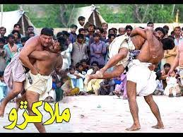
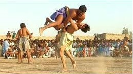
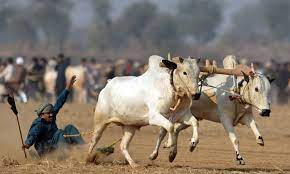
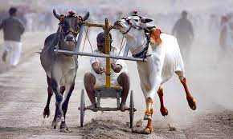
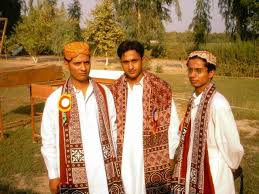
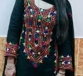
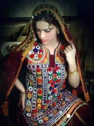
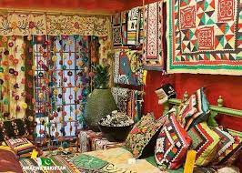

Details Here
economy etomology civilisationSindh is the most praveling and historical part of the south Asia. It's existance recorded back to some more than 5000 year BC. Sindh (/ˈsɪnd/; Sindhi: سنڌ; Urdu: سندھ, pronounced [sɪndʱ]; historically romanized as Sind) is one of the four provinces of Pakistan. Located in the southeastern region of the country, Sindh is the third-largest province of Pakistan by total area and the second-largest province by population after Punjab. It shares land borders with the Pakistani provinces of Balochistan and Punjab to the north, respectively, and the Indian states of Gujarat and Rajasthan to the east; it is also bounded by the Arabian Sea to the south. Sindh's landscape consists mostly of alluvial plains flanking the Indus River, the Thar Desert in the eastern portion of the province along the international border with India, and the Kirthar Mountains in the western portion of the province.
economy
The economy of Sindh is the second-largest in Pakistan after the province of Punjab; its provincial capital of Karachi is the most populous city in the country as well as its main financial hub. Sindh is home to a large portion of Pakistan's industrial sector and contains two of the country's busiest commercial seaports: Port Qasim and the Port of Karachi. The remainder of Sindh consists of an agriculture-based economy and produces fruits, consumer items and vegetables for other parts of the country.Sindh is sometimes referred to as the Bab-ul Islam (transl. 'Gateway of Islam'), as it was one of the first regions of the Indian subcontinent to fall under Islamic rule. Parts of the modern-day province were intermittently subject to raids by the Rashidun army during the early Muslim conquests, but the region did not fall under Muslim rule until the Arab invasion of Sind occurred under the Umayyad Caliphate, headed by Muhammad ibn Qasim in 712 CE.[8][9] Ethnic Sindhi people constitute the largest group in the province; Sindh is also the place of residence for the overwhelming majority of Muhajirs (lit. 'migrants'), a multiethnic group of Indian Muslims who migrated to the region after the Partition of British India in 1947. The province is well known for its distinct culture, which is strongly influenced by Sufism, an important marker of Sindhi identity for both Hindus and Muslims. Several important Sindhi Sufi shrines are located throughout the province and attract millions of devotees annually.
Etymology
The Greeks who conquered Sindh in 325 BC under the command of Alexander the Great referred to the Indus River as Indós,hence the modern Indus. The ancient Iranians referred to everything east of the river Indus as hind.[12][13] The word Sindh is a Persian derivative of the Sanskrit term Sindhu, meaning "river" - a reference to Indus River.[14] Southworth suggests that the name Sindhu is in turn derived from Cintu, a Dravidian word for date palm, a tree commonly found in Sindh.[15][16] The previous spelling "Sind" (from the Perso-Arabic سند) was discontinued in 1988 by an amendment passed in Sindh Assembly,[17] and is now spelt "Sindh."Indus Valley Civilisation
Sindh was the centre of the Indus Valley Civilisation, which rivaled the contemporary civilizations of Ancient Egypt and Mesopotamia in size and scope, numbering nearly half a million inhabitants at its height with well-planned grid cities and sewer systems. The primitive village communities in Balochistan were still struggling against a difficult highland environment, a highly cultured people was trying to assert itself at Kot Diji. This was one of the most developed urban civilizations of the ancient world. It flourished between the 25th and 15th centuries BC in the Indus valley sites of Mohenjo Daro and Harappa. The people had a high standard of art and craftsmanship and a well-developed system of quasi-pictographic writing which remains un-deciphered. The ruins of the well planned towns, the brick buildings of the common people, roads, public baths and the covered drainage system suggest a highly organized community.[18]
There is no evidence of large palaces or large tombs for the elite. The grand and presumably holy site might have been the great bath, which is built upon an artificially created elevation.[19] This civilization collapsed around 1700 BC for reasons that are uncertain; the cause is hotly debated and may have been a massive earthquake, which dried up the Ghaggar River. Skeletons discovered in the ruins of Moan Jo Daro ("mount of dead") were thought to indicate that the city was suddenly attacked and the population was wiped out,[20] but further examinations showed that the marks on the skeletons were due to erosion and not of violence.[21]
Early history The ancient city of Roruka, identified with modern Aror/Rohri, was capital of the Sauvira Kingdom, and finds mentioned early Buddhist literature as a major trading center.[22] Sindh finds mention in the Indian epic Mahabharata as being part of Bharatvarsha. Sindh was conquered by the Persian Achaemenid Empire in the 6th century BC. In the late 4th century BC, Sindh was conquered by a mixed army led by Macedonian Greeks under Alexander the Great. The region remained under control of Greek satraps for only a few decades. After Alexander's death, there was a brief period of Seleucid rule, before Sindh was traded to the Mauryan Empire led by Chandragupta in 305 BC. During the rule of the Mauryan Emperor Ashoka, the Buddhist religion spread to Sindh. Mauryan rule ended in 185 BC with the overthrow of the last king by the Shunga Dynasty. In the disorder that followed, Greek rule returned when Demetrius I of Bactria led a Greco-Bactrian invasion of India and annexed most of the northwestern lands, including Sindh. Demetrius was later defeated and killed by a usurper, but his descendants continued to rule Sindh and other lands as the Indo-Greek Kingdom. Under the reign of Menander I, many Indo-Greeks followed his example and converted to Buddhism. In the late 2nd century BC, Scythian tribes shattered the Greco-Bactrian empire and invaded the Indo-Greek lands. Unable to take the Punjab region, they invaded South Asia through Sindh, where they became known as Indo-Scythians (later Western Satraps). By the 1st century AD, the Kushan Empire annexed Sindh. Kushans under Kanishka were great patrons of Buddhism and sponsored many building projects for local beliefs.[23] Ahirs were also found in large numbers in Sindh.[24] Abiria country of Abhira tribe was in southern Sindh.[25][26] The Kushan Empire was defeated in the mid-3rd century AD by the Sassanid Empire of Persia, who installed vassals known as the Kushanshahs in these far eastern territories. These rulers were defeated by the Kidarites in the late 4th century. It then came under the Gupta Empire after dealing with the Kidarites. By the late 5th century, attacks by Hephthalite tribes known as the Indo-Hephthalites or Hunas (Huns) broke through the Gupta Empire's northwestern borders and overran much of northwestern India. Afterwards, Sindh came under the rule of Emperor Harshavardhan, then the Rai Dynasty around 478. The Rais were overthrown by Chachar of Alor around 632. The Brahman dynasty ruled a vast territory that stretched from Multan in the north to the Rann of Kutch, Alor was their capital.
Mehran Culture
Celebraties
Jewellery

Sports




Dishes
Dressess



Handicrafts
